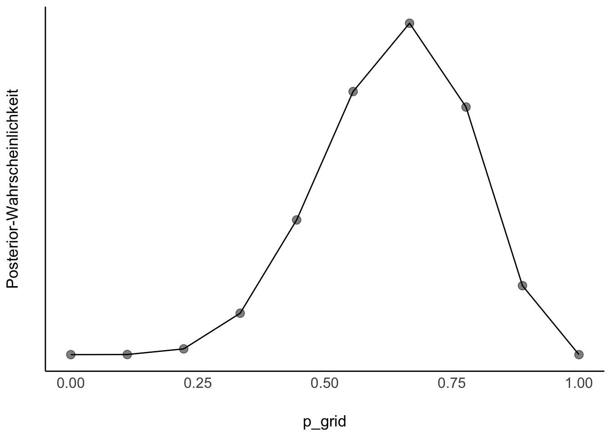
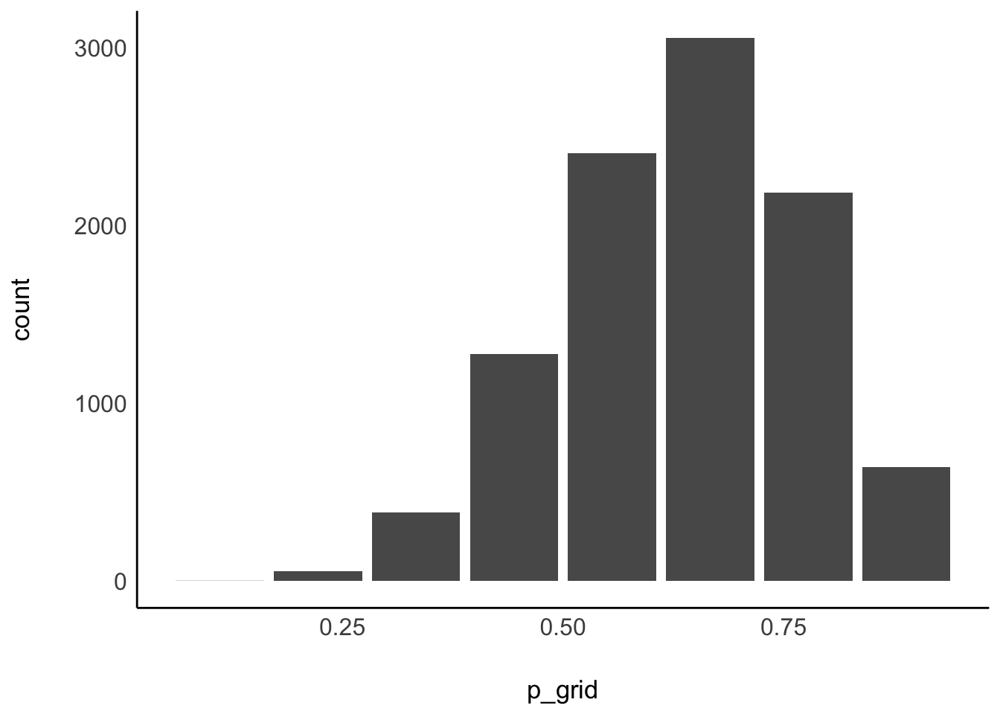
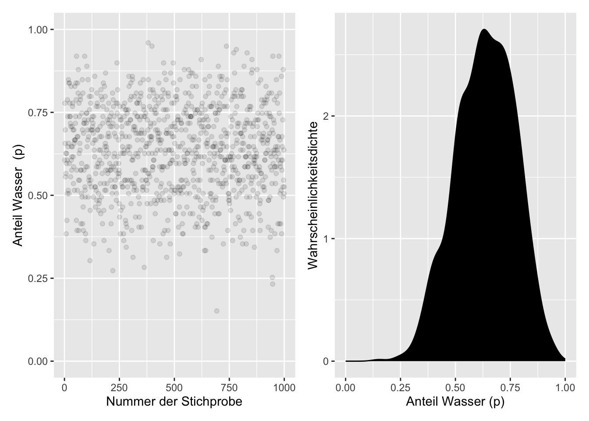
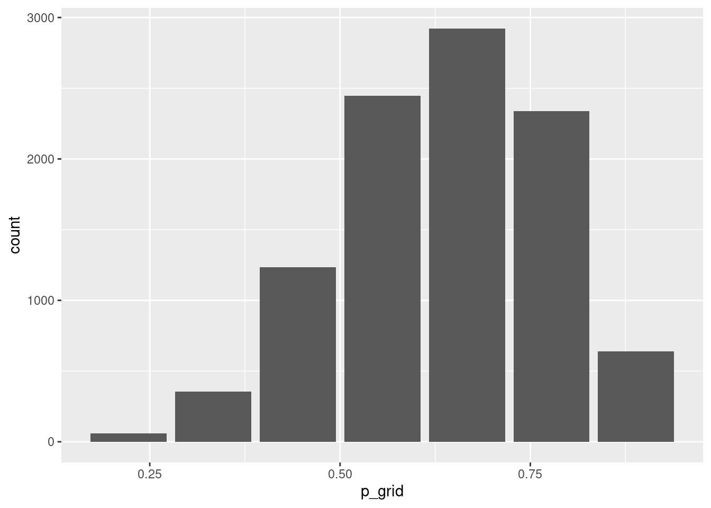
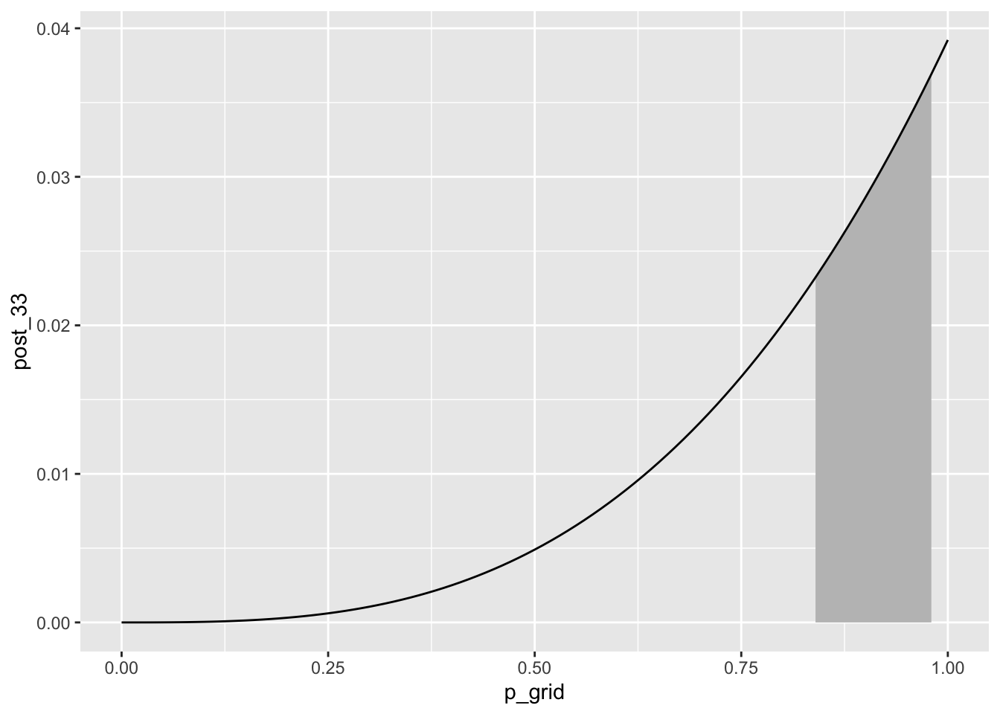

Die Gittermethode ist ein Weg, die Posteriori-Verteilung zu berechnen. Die Posteriori-Verteilung birgt viele nützliche Informationen.
Modell: \(W=6\) Wasser, \(N=9\) Würfen und \(k=10\) Gitterwerten.
Abb. Abbildung 6.1 zeigt die resultierende Post-Verteilung.

Abbildung 6.1: Die Postverteilung für W=6, N=9, k=10
Tabelle d mit Daten zur Posteriori-Verteilung
p_grid
prior
likelihood
unstand_post
post
0
1
0
0
0
1 × 10−1
1
1 × 10−4
1 × 10−4
1 × 10−4
2 × 10−1
1
5 × 10−3
5 × 10−3
5 × 10−3
3 × 10−1
1
3 × 10−2
3 × 10−2
4 × 10−2
4 × 10−1
1
1 × 10−1
1 × 10−1
1 × 10−1
6 × 10−1
1
2 × 10−1
2 × 10−1
2 × 10−1
6.1.3 Beispiele für Fragen an die Post-Verteilung
Mit welcher Wahrscheinlichkeit liegt der Parameter unter einem bestimmten Wert?
Mit welcher Wahrscheinlichkeit liegt der Parameter zwischen zwei bestimmten Werten?
Mit 5% Wahrscheinlichkeit liegt der Parameterwert nicht unter welchem Wert?
Welcher Parameterwert hat die höchste Wahrscheinlichkeit?
Wie ungewiss ist das Modell über die Parameterwerte?
Solche Fragen kann man in zwei Gruppen aufteilen:
Fragen zu Parametern
Fragen zu Wahrscheinlichkeiten
6.1.4 Wir arbeiten jetzt mit Häufigkeit, nicht mit Wahrscheinlichkeit
Komplexere Bayes-Modelle können nicht mehr “einfach mal eben” ausgerechnet werden; die Integrale, auf die man dabei stößt, treiben einem gestandenen Mathematiker die Schweißperlen auf die Stirn.
Glücklicherweiße gibt es einen Trick, der die Sache nicht nur rechnerisch, sondern auch konzeptionell viel einfacher macht.
Dieser Trick lautet: Wir arbeiten nicht mehr mit Wahrscheinlichkeiten, sondern mit Häufigkeiten.
Praktischerweise werden wir in Kürze einen R-Golem kennenlernen, der uns das meiste an Arbeit abnimmt. Dieser Golem liefert uns Stichproben aus der Post-Verteilung zurück.
Lernen wir jetz also, wie man mit solchen Stichproben umgeht.
Wichtig
Die Post-Verteilung in Stichprobenform ist viel einfach zu handbaben als das direkte Arbeiten mit Wahrscheinlichkeiten. Daher sind viele R-Funktionen für Bayes auf Stichproben eingestellt.
Die Grid-Methode ist bei größeren Datensätzen (oder größeren Modellen) zu rechenintensiv. In der Praxis werden daher andere, schnellere Verfahren verwendet, sog. Monte-Carlo-Markov-Ketten (MCMC). Diese Verfahren sind aber nicht mehr Gegenstand dieses Kurses.
6.1.5 Häufigkeiten sind einfacher als Wahrscheinlichkeiten
Wie gesagt, typische R-Werkzeuge (“R-Golems”) liefern uns die Post-Verteilung in Stichprobenform zurück.
Bevor wir uns aber mit diesen R-Werkzeugen beschäftigen, sollten wir uns vertraut machen mit einer Post-Verteilung in Stichprobenform.
Ersstellen wir uns also einen Tabelle mit Stichprobendaten aus der Posteriori-Verteilung (Tabelle d):
Code
samples <- d %>%# nimmt die Tabelle mit Posteriori-Daten,slice_sample( # Ziehe daraus eine Stichprobe,n =1e4, # mit insgesamt n=10000 Elementen,weight_by = post, # Gewichte nach Spalte mit Post-Wskt.,replace = T) # Ziehe mit Zurücklegen
Die Wahrscheinlichkeit, einen Parameterwert aus Tabelle d zu ziehen, ist proportional zur Posteriori-Wahrscheinlichkeit (post) dieses Werts. Ziehen mit Zurücklegen hält die Wahrscheinlichkeiten während des Ziehens konstant.
Stichprobendaten aus der Post-Verteilung
Nur die ersten Zeilen abgebildet
p_grid
prior
likelihood
unstand_post
post
0.667
1
0.273
3 × 10−1
0.303
0.556
1
0.217
2 × 10−1
0.241
0.556
1
0.217
2 × 10−1
0.241
Wenn Sie jetzt denken: “Warum machen wir das jetzt? Brauchen wir doch gar nicht!” - Dann haben Sie Recht. Künftig werden wir aber, wenn wir mit komplexeren Modellen zu tun haben, nur noch mit Post-Verteilungen auf Stichprobenbasis arbeiten.
So sieht die Post-Verteilung auf Basis von Stichproben dann aus, s. Abb. Abbildung 6.2.

Abbildung 6.2: Stichprobenverteilung auf Basis von Stichproben
6.1.6 Visualisierung der Stichprobendaten mit \(k=100\) Gitterwerten
\(k=10\) Gitterwerte ist ein grobes Raster. Drehen wir mal die Auflösung auf \(k=100\) nach oeben.
Datensatz samples, \(n=10^3\), \(k=100\) Gitterwerte, basierend auf dem Modell oben.
Code
samples_k100 <- d_k100 %>%# nimmt die Tabelle mit Posteriori-Daten,slice_sample( # Ziehe daraus eine Stichprobe,n = n, # mit insgesamt n=1000 Elementen,weight_by = post, # Gewichte nach Spalte mit Post-Wskt.,replace = T) # Ziehe mit Zurücklegen

Die Stichprobendaten nähern sich der “echten” Posteriori-Verteilung an: Die Stichproben-Post-Verteilung hat jetzt “glattere” Ränder.
Hinweis
Mehr Stichproben und mehr Gitterwerte glätten die Verteilung.
Jetzt noch mal mit mehr Stichproben: \(n=10^6\) Stichproben bei \(k=100\) Gitterwerten aus der Posteriori-Verteilung.
Die Post-Verteilung ist das zentrale Ergebnis einer Bayes-Analyse. Wir können viele nützliche Fragen an sie stellen.
Es gibt zwei Arten von Fragen:
nach Wahrscheinlichkeit (p)
nach Parameterwerten (Quantilen, q)
Der Unterschied zwischen beiden Arten von Fragen ist in Abb. Abbildung 6.3 illustriert.
Abbildung 6.3: Fragen nach p vs. Fragen nach q
6.2.1 Fragen zu Wahrscheinlichkeiten
Sagen wir, dass sei unsere Forschungsfrage: Wie groß ist die Wahrscheinlichkeit, dass der Wasseranteil unter 50% liegt?
Wir filtern einfach die passenden Stichproben und und summieren die Wahrscheinlichkeiten dieser Stichproben:
Wir zählen (count) einfach die Stichproben, die sich für einen Wasseranteil (p_grid) von weniger als 50% aussprechen:
Code
samples %>%count(p_grid < .5)
p_grid < 0.5
n
FALSE
8399
TRUE
1601
Da wir insgesamt 10000 (1e4) Stichproben gezogen haben, können wir noch durch diese Zahl teilen, um einen Anteil zu bekommen. Dieser Anteil ist die Antwort auf die Forschungsfrage: Wie Wahrscheinlichkeit (laut Modell) für einen Wasseranteil kleiner als 50%.
Einfach wie 🍰 essen.
Noch eine Forschungsfrage: Mit welcher Wahrscheinlichkeit liegt der Parameter zwischen 0.5 und 0.75?
Code
samples %>%count(p_grid > .5& p_grid < .75)
p_grid > 0.5 & p_grid < 0.75
n
FALSE
4513
TRUE
5487
Code
samples %>%count(p_grid > .5& p_grid < .75) %>%summarise(Anteil = n /1e4,Prozent =100* n /1e4) # In Prozent
Anteil
Prozent
0.4513
45.13
0.5487
54.87
Anteile von count() könnte man, wenn man möchte, auch filter() verwenden:
Code
samples %>%filter(p_grid > .5& p_grid < .75) %>%summarise(sum =n() /1e4,anteil =100*n() /1e4) # In Prozent
sum
anteil
0.5487
54.87
Noch ein Beispiel für eine Forschungsfrage: Mit welcher Wahrscheinlichkeit liegt der Parameter zwischen 0.9 und 1?
Laut unserem Modell ist es also sehr unwahrscheinlich, dass der Wasseranteil der Erde mind. 90% beträgt.
6.2.2 Fragen nach Parameterwerten
Wichtig
Schätzbereiche von Parameterwerten nennt man auch Konfidenz- oder Vertrauensintervall (synonym: Kompatibilitätsintervall oder Passungsbereich).
Welcher Parameterwert wird mit 90% Wahrscheinlichkeit nicht überschritten, laut unserem Modell? (Gesucht sind also die unteren 90% Posteriori-Wahrscheinlichkeit)
Code
samples %>%summarise(quantil90 =quantile(p_grid, p = .9))
quantil90
0.7777778
Laut unserem Modell können wir zu 90% sicher sein, dass der Wasseranteil kleiner ist als ca. 78%.
Es hilft vielleicht, sich die Post-Verteilung noch einmal vor Augen zu führen:
Code
samples %>%ggplot(aes(x = p_grid)) +geom_bar()

Was ist das mittlere Intervall, das mit 90% Wahrscheinlichkeit den Parameterwert enthält, laut dem Modell?
Dafür “schneiden” wir links und rechts die 5% der Stichproben mit den extremsten Werten ab und schauen, bei welchem Parameterwert wir landen:
Solche Fragen lassen sich mit Hilfe von Quantilen beantworten.
6.2.3 Zur Erinnerung: Quantile
Beispiel: Wie groß sind die Studentis (Quelle des Datensatzes)? Das Quantil von z.B. 25% zeigt die Körpergröße der 25% kleinsten Studentis an, analog für 50%, 75%:
Den R-Befehl quantile() kann man sich, wenn man will, einfach nachbauen und entmystifizieren.
Angenommen, wir wollen wissen, welcher Wasseranteil mit 90% Wahrscheinlichkeit nicht überschritten wird:
Sortiere die Stichproben aufsteigend.
Schneide die oberen 10% ab.
Schaue, was der größte verbleibende Wert ist.
Code
samples %>%arrange(p_grid) %>%# sortiereslice_head(n =9000) %>%# nur die ersten 90000, also die obersten 1000 abschneidensummarise(p90 =max(p_grid))
p90
0.7777778
Das (annähernd) gleiche Ergebnis liefert quantile():
Code
samples %>%summarise(q90 =quantile(p_grid, .9))
q90
0.7777778
6.2.5 Visualisierung der Intervalle
Intervalle (Bereiche), die die Wahrscheinlichkeitsmasse hälftig auf die beiden Ränder aufteilen, nennen wir Perzentilintervalle oder Equal-Tails-Intervalle (ETI):
6.3 Schiefe Posteriori-Verteilungen sind möglich
Gehen wir von 3 Würfen mit 3 Treffern aus; auf welche Wasseranteile (Parameterwerte) werden wir jetzt schließen?
Vermutlich ziemlich hohe.
Erstellen wir uns dazu mal eine Post-Verteilung (3 Treffer, 3 Würfe):
Der wahrscheinlichste Parameterwert (1) ist nicht im Intervall enthalten. Das ist ein Nachteil der ETI.
6.3.2 50%-Intervall höchster Dichte
Intervalle höchster Dichte (Highest density Intervals) sind definiert als die schmälsten Intervalle, die den gesuchten Parameter enthalten.

Der wahrscheinlichste Paramterwert (1) ist im Intervall enthalten, was Sinn macht.
So kann man sich die Grenzwerte eines 50%-HDI ausgeben lassen:
Code
samples %>%select(p_grid) %>% bayestestR::hdi(ci = .5) # aus dem Paket `bayestestR`
Parameter
CI
CI_low
CI_high
p_grid
0.5
0.6666667
0.7777778
Das Modell ist sich also zu 50% sicher, dass der gesuchte Parameter (der Wasseranteil der Erdoberfläche) sich in diesem Bereich befindet (auf Basis eines HDI).
Hinweis
Das R-Paket {bayestestR} ist Teil des Meta-Pakets {easystats}. Es reicht, wenn Sie easystats laden, damit wird bayestestR automatisch geladen.
6.4 Intervalle höchster Dichte vs. Perzentilintervalle
Bei symmetrischer Posteriori-Verteilung sind beide Intervalle ähnlich
Perzentilintervalle sind verbreiteter
Intervalle höchster Dichte (Highest Density Interval, HDI) sind bei schiefen Post-Verteilungen zu bevorzugen
Intervalle höchster Dichte sind die schmalsten Intervalle für eine gegebene Wahrscheinlichkeitsmasse
6.5 Punktschätzungen
Datendatz samples, 6 Treffer bei 9 Würfen.
6.5.1 Lageparameter
Z.B. Welchen mittleren Wasseranteil muss man annehmen?